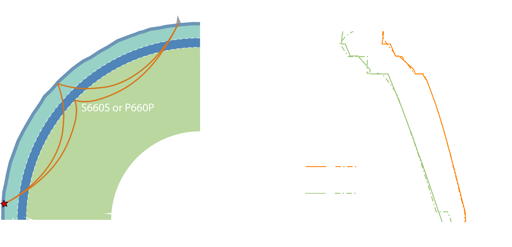
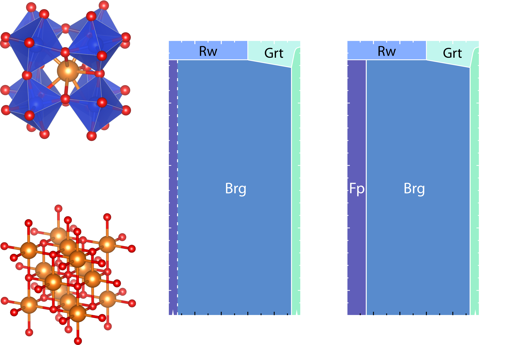
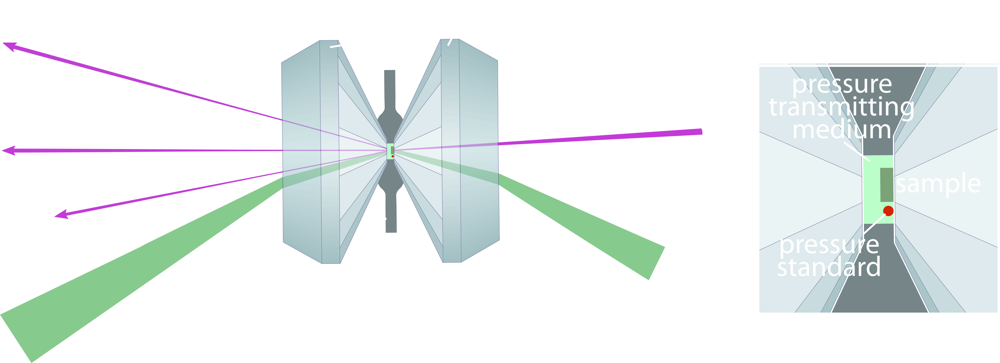

Whenever an earthquake occurs, seismic waves are produced, propagate inside the Earth, and are recorded by seismometers on the Earth’s surface. Depending on the relation between propagation and oscillation directions, body waves are divided into compressional or primary (P) waves and shear or secondary (S) waves, whose propagation velocities (vP and vS) depend on the density (ρ), bulk modulus (K) and shear modulus (G) of the rocks they encounter on their path:
$$v_{P} = \sqrt{\frac{K+\frac{4}{3}G}{\rho}}, \; \; v_{S} = \sqrt{\frac{G}{\rho}}$$
The seismic properties of rocks in the Earth's interiors can change discontinuously in response to variations in their chemical and mineralogical composition. P- and S-waves reflected at these interfaces have faster travel times than their counterparts reflected at the Earth's surface (Figure 1a). Radial (or 1D) models of the Earth interiors are obtained by fixing a set of global discontinuities at different depths and inverting an appropriate set of body waves travel times, surface waves, and/or free oscillations. Currently most used reference models are the Preliminary Reference Earth Model (PREM)[1], and ak135 [2]. Many discontinuities in the Earth's mantle can be attributed to changes in the mineralogy of mantle rocks. For instance, olivine transforms to its high-pressure polymorph wadsleyite at 410 km depth and ringwoodite, another polymorph of olivine, breaks down into bridgmanite, a magnesium silicate with the perovskite-type structure, and periclase.

Figure 1. (left) Schematic representation of the layered structure of the Earth's mantle in a spherically symmetric model. Seismic waves reflected generated from an earthquake (red star) and reflected by a major discontinuity (e.g., 660 km) arrive at seismic station before waves reflected by the Earth's surface. (right) The radial (1D) models PREM[1] and ak135[2] showing how the variation of density and seismic velocities as a function of depth in the Earth's mantle.
Minerals Under Pressure
The composition of Earth's upper mantle can be estimated from that of basaltic lavas erupted at mid ocean ridges (mid-ocean ridge basalts, or MORB) and that of peridotite rocks transported by the ascending magmas (xenoliths). A mixture of 4 parts depleted peridotite (harzburgite) and one part MORB is believed to represent the composition of the primitive upper mantle[3]. As natural samples from depths greater than 200 km are rare, it is the role of high-pressure and high-temperature experiments to investigate what are the mineral phases constituting rocks at depths of the deep upper mantle, mantle transition zone, and the lower mantle. Open questions include whether the bulk composition of the mantle changes with depth (mainly the molar ratio of Mg/Si) and what is the role of subducted oceanic materials, such as MORB and harzburgite, reintroduced into the mantle via subduction processes.
The lower mantle, spanning from approximately 660 to 2890 km depths, is the largest silicate reservoir by volume. A typical lower mantle mineral assemblage is believed to be comprised of (Mg,Fe,Al)(Si,Al,Fe)O3 bridgmanite, (Mg,Fe)O ferropericlase, and CaSiO3 davemaoite (Figure 2). Both bridgmanite and davemaoite have perovskite-type structures, although bridgmanite has orthorhombic symmetry whereas davemaoite is cubic. Ferropericlase, on the other hand, has the rock-salt (B1) structural type. Bridgmanite is the dominant mineral phase, with an estimated volume fraction of 75\%-95\%, depending on the assumed Mg/Si ratio. This key parameter is, however, still relatively unconstrained because of the technical challenging involved in measuring the thermodynamic and seismic properties of the above mentioned candidate lower mantle minerals at their relevant conditions of high pressure and temperature.

Figure 2. (left) Crystal structures of MgSiO3 bridgmanite and MgO (ferro)periclase. Images generated using VESTA[4]. (right) Experimentally determined phase proportions in pyrolite (Mg/Si ~ 1.25) [5] and proposed phase proportions for a chondrite-like composition (Mg/Si ~ 1) [6] as a function of depth. The two models only differ in the proposed fractions of ferropericlase and bridgmanite, but point towards potentially different scenarios of planetary accretion, core-mantle differentiation, and/and mantle dynamics. Brg = bridgmanite, Fp = ferropericlase, Dm = davemaoite (CaSiO3 perovskite), Rw = ringwoodite, Grt = (majoritic) granet.
High-Pressure Experiments
To refine the Mg/Si ratio of the lower mantle and constrain the composition of the bulk silicate Earth (BSE), I conduct high-pressure experiments aimed at determining the seismic and thermodynamic properties of synthetic analogues of lower mantle mineral phases. High-pressure conditions are generated using the diamond anvil cells (DAC). This device employs two gem-quality single crystals of diamond with truncated tips (culets) to squeeze a sample contained in a metallic gasket (Figure 3). To generate hydrostatic or quasi-hydrostatic conditions, a pressure-transmitting medium (typically a noble gas such as neon or helium) is loaded together with the sample. Owing to the exceptional mechanical and optical properties of diamond, pressures corresponding to the deep lower mantle (100 GPa) and beyond can be generated while the structural, chemical, and physical properties of the sample are determined from a wide range of in-situ diagnostics.
Using X-ray diffraction, I study how the density and structure of minerals respond to changes in pressure and temperature. Equations of state can then be used to interpolate the pressure-volume and pressure-volume-temperature data points, so that thermodynamic parameters, such as the compressibility, thermal expansivity, and free energy variation, can be calculated as a function of pressure and temperature. These parameters are critical to extrapolate phase equilibria of minerals at high-pressure and high-temperature conditions and compute seismic properties such as the density and compressional velocity.
Light scattering techniques (e.g., Brillouin Scattering), on the other hand, allow to directly probe the sound wave velocities of transparent samples.

Figure 3. (left) schematic representation of a diamond anvil cell (DAC). Typical in-situ diagnostics to determine the seismic and thermodynamic properties of the sample include X-ray diffraction and light scattering techniques (e.g., Brillouin scattering). (right) In the sample chamber, one or more samples and a secondary pressure standard (e.g., ruby sphere, noble metals, MgO) are enveloped by the pressure transmitting medium.
References
Dziewonski, A. M., & Anderson, D. L. (1981). Preliminary reference Earth model. Physics of the earth and planetary interiors, 25(4), 297-356. https://doi.org/10.1016/0031-9201(81)90046-7
Kennett, B. L., Engdahl, E. R., & Buland, R. (1995). Constraints on seismic velocities in the Earth from traveltimes. Geophysical Journal International, 122(1), 108-124. https://doi.org/10.1111/j.1365-246X.1995.tb03540.x
Momma, K., & Izumi, F. (2008). VESTA: a three-dimensional visualization system for electronic and structural analysis. Journal of Applied Crystallography, 41(3), 653-658. https://doi.org/10.1107/S0021889808012016
Irifune, T., Shinmei, T., McCammon, C. A., Miyajima, N., Rubie, D. C., & Frost, D. J. (2010). Iron partitioning and density changes of pyrolite in Earth’s lower mantle. Science, 327(5962), 193-195. https://doi.org/10.1126/science.1181443
Murakami, M., Ohishi, Y., Hirao, N., & Hirose, K. (2012). A perovskitic lower mantle inferred from high-pressure, high-temperature sound velocity data. Nature, 485(7396), 90-94. https://doi.org/10.1038/nature11004